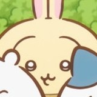

오늘의 가타카나
① 오늘 외울 글자 — 글자를 누르면 발음과 획순이 나와요
숫자 순서대로 써요. 위→아래, 왼쪽→오른쪽이 기본! 손가락으로 허공에 따라 써보세요.
② 치이카와 퀴즈 — 지금까지 배운 글자에서 10문제
あ
③ 획순 쓰기 퀴즈 — 읽는 법을 보고 마우스/손가락으로 직접 써보세요

획 순서대로 한 획씩 떼면서 써요.
④ 오늘의 가타카나 단어 — 메뉴판·간판에서 보는 외래어 (1번 누르면 읽는 법, 2번 누르면 뜻)
읽는 규칙 세 가지 — ー 앞 소리를 길게(コーヒー 코-히-) · 작은 ッ 한 박자 쉬기(チケット 치켓토) · 작은 ャュョ 앞 글자와 합치기(メニュー 메뉴-)
⑤ 헷갈리는 가타카나 — 카드를 누르면 획순이 나와요
⑥ 가타카나 전체표 — 왼쪽 행 이름을 누르면 그 행을 오늘 배워요 · 글자를 누르면 획순
보너스: 탁음·반탁음 (が・ざ・だ・ば・ぱ) — 점 두 개(゛)면 탁하게, 동그라미(゜)면 ㅍ
하루에 한 행씩, 열흘이면 가타카나 끝! ぴょん! · 히라가나 복습하러 가기 · 처음으로
캐릭터 그림 © nagano · 개인 학습용 팬 페이지 · 기록은 이 기기 브라우저에만 저장돼요
획순 데이터: KanjiVG (CC BY-SA 3.0)
캐릭터 그림 © nagano · 개인 학습용 팬 페이지 · 기록은 이 기기 브라우저에만 저장돼요
획순 데이터: KanjiVG (CC BY-SA 3.0)